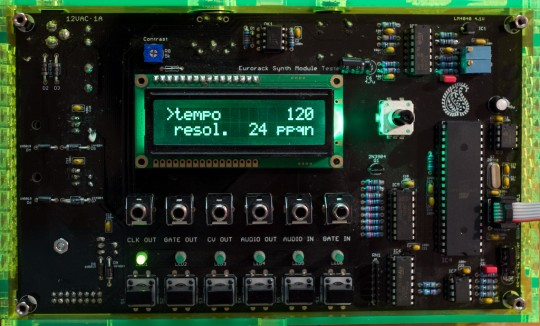
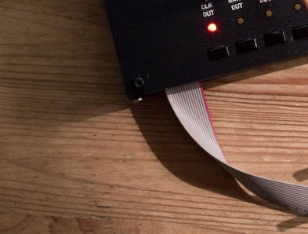

Overview
Several problems were faced during the development of our Eurorack modules:
- How to power and test a module during development? Bench-top power supplies are cumbersome (especially for projects requiring 3 supply rails) and standard test equipment is sometimes useless or frustrating for quantities like musical notes or V/Oct scales. On the other extreme of the scale, who would run the risk of putting a half-built prototype in a rack loaded with thousands of euros worth of modules?
- What kind of setup to use for factory testing?
- How to take a project away from the lab without carrying heaps of "dependencies"?
We solved this the Mutable Instruments way, rolling up our sleeves and designing a simple box able to provide power and all kinds of test signals (clocks, gates, CVs, audio tones) to a module. This tool is made available under cc-by-sa (hardware) and GPL (firmware) licenses.
Building it
Schematics and layout
Eagle .brd/.sch files hosted on github.
BOM
Assembly notes
The large capacitors on the bottom of the board should be bent and rest against the board (rather than be mounted vertically as it was done on Ambika). The same thing applies to the NP capacitors on the top side. See this picture:

Firmware
Fuses: EFUSE = 0xfd ; HFUSE = 0xd4 ; LFUSE = 0xff
Build with
make -f module_tester/makefile bootstrap.
Calibration
Set the CV output to "2 Oct arpeggio" with a period of 2s or 5s. It cycles between a 1V output and a 3V output. Adjusts the two trimmers to accurately get these voltages. Note that the MCP4822's linearity is not fantastic - so don't be surprised to get 1V and 1.997V or 2.003V when you change the CV output to "1 Oct arpeggio". The chance is, the analog circuitry on the other end is much less precise than that anyway!
User manual
Power generation
The tester must be powered by a 12V AC external power supply (Wall-wart) with a 2.1mm jack. The red stripe of the ribbon cable (indicating the -12V pins) must be oriented like on this picture: 
Because the tester uses half-wave rectification, and input capacitors and heatsinks of moderate size, it is not recommended to draw more than 200mA from the supply rails.
Features
The tester provides 4 channels of signal generation: clock, gate, CV (LFO or stepped notes), and audio. The tester provides 2 channels of signal analysis: audio signal frequency measurement (with display in Hz, Note units, or intervals), and gate/clock timing measurement.
Modifying settings
Each of the 4 signal generation and 2 signal analysis functions is materialized by an output or input jack, a LED, and a button. To modify the settings of a generator/analyzer, press the button under its I/O jack. The LED indicates which generator/analyzer is being configured. The display shows a list of parameters. Turn the encoder to scroll through the list. Click the encoder to modify an option. Notice that the '>' arrow is now displayed in front of the value. Turn the encoder to modify the value. Click the encoder to confirm. For example, to modify the frequency of the audio signal generator to A3, press the AUDIO OUT button. The display shows:
>shape sine
freq. C5
Turn the encoder to select "freq.":
shape sine
>freq. C5
Click the encoder to modify the value:
shape sine
freq. > C5
shape sine
freq. > A3
Click the encoder to confirm.
shape sine
>freq. A3
Settings reference
Clock signal generator
- Tempo is the tempo of the clock, in beats per minute.
- Resolution is the number of clock ticks per beat. For example, a tempo of 120 beats per minute with 8 ticks per beat corresponds to a clock frequency of 960 ticks per minute (16 Hz).
- Pulse is the duration or duty cycle of a clock pulse.
- MIDI allows the clock rate to be controlled by an external computer or sequencer.
Gate signal generator
- Period is the period of the signal.
- Pulse is the duration or duty cycle of a gate pulse.
- MIDI allows the gate signal to be generated from an external keyboard. In gate mode, the signal is high whenever a key is pressed on the keyboard. In trigger mode, a pulse is emitted every time a key is pressed - irrespectively of the duration of the note.
Control Voltage generator
- Mode controls the output waveform: triangle, square, ramp up, ramp down, sine, 1 octave arpeggio (alternates between 1V and 2V), 2 octave arpeggio (alternates between 1V and 3V), chromatic scale (goes from 1V to 2V by 1/12V increments).
- Period controls the period of the generated signal or sequence.
- Range controls the amplitude and polarity of the signal: bipolar signals with a 2V, 4V or 10V amplitude; unipolar signals with a 1V, 2V or 5V amplitude. This setting is ignored when one of the arpeggio/scale modes are selected.
- MIDI allows the voltage produced by this generator to be controlled by a MIDI message from an external keyboard.
Audio generator
- Shape selects one of 4 waveforms: saw, square, triangle, sine wave.
- Frequency selects the signal frequency. A few fixed frequencies are available, the remaining values are musical notes.
- Envel. allows an external signal to "shape" the tone produced by this generator. In gate mode, the signal is on whenever the signal at the Gate In input is high. In trigger mode, the signal has a decreasing envelope, which is retriggered on raising edges of the Gate In signal.
- MIDI allows the audio generator to be played from a keyboard.
Audio input
The encoder selects between 3 units:
- Frequency (Hz)
- Note and detuning (MIDI standard + cents)
- Interval. In this mode, the musical interval between the current stable note and the previously played note is measured. This interval is expressed in cents. 1 octave = 1200 cents.
Gate input
The first line displays either the period, frequency, and tempo of the incoming signal. The second line displays either the duty cycle, or the duration of the positive edge of the signal. Note that the Gate Input LED blinks with the input signal.